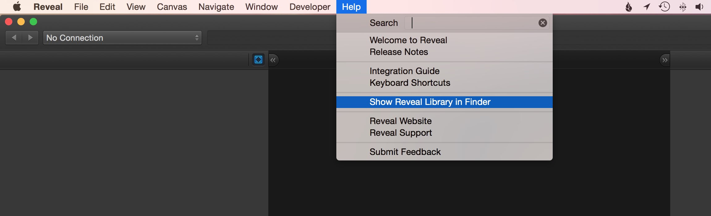
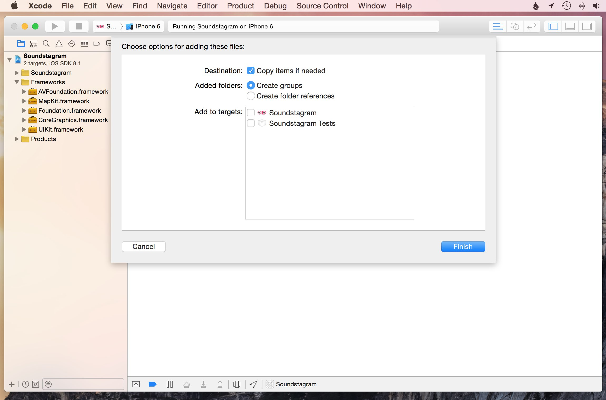
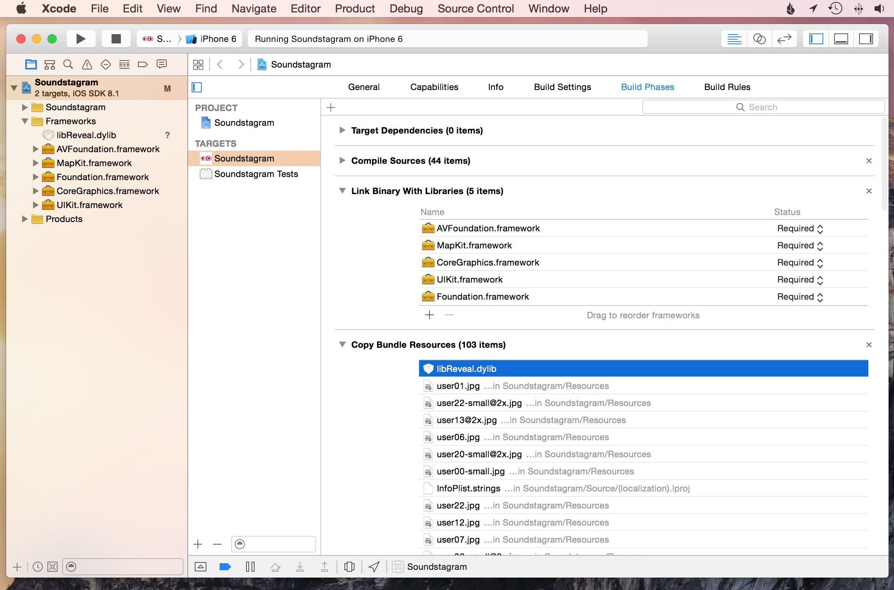
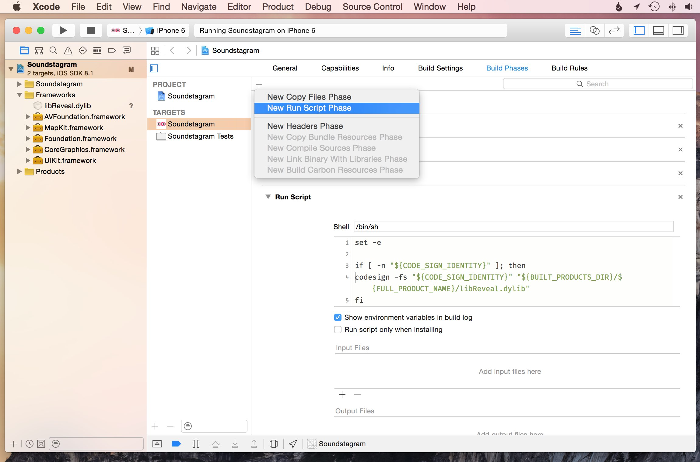
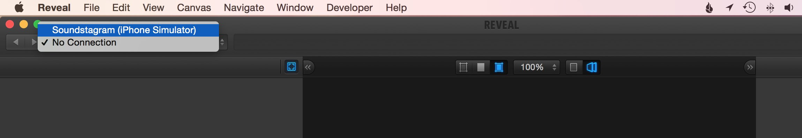

Adding Reveal to your Xcode project allows all members of your team to use Reveal without having to perform further configuration.
WARNING: Never ship a release build of your app containing the Reveal dynamic library. Apple does not allow dynamic library loading in iOS apps distributed via the App Store.
Open your iOS project in Xcode.
Launch Reveal and select Help → Show Reveal Library in Finder. This will open a Finder window showing a folder named iOS-Libraries.

Drag libReveal.dylib in to the Project Navigator panel of your project in Xcode.
In the add to targets dialog that is shown, deselect all targets. This ensures that Xcode doesn't link the dynamic library at compile time. Optionally, select Copy items if needed to copy libReveal.dylib into your project — if you do, you'll need to remember to update this library whenever Reveal is updated by following the previous steps again.

Click Finish.
In Xcode's Project Navigator, select your project. For each target that you wish to use with Reveal:

In the Copy Bundle Resources section, add libReveal.dylib.
Under Link Binary with Libraries:
To dynamically load the library in an application running on a device outside of the debugger, you need to code sign libReveal.dylib as part of the build process.

Go to your target's Build Phases tab and select Editor → Add Build Phase → Add Run Script menu. Edit the Run Script to contain:
set -e
if [ -n "${CODE_SIGN_IDENTITY}" ]; then
codesign -fs "${CODE_SIGN_IDENTITY}" "${BUILT_PRODUCTS_DIR}/${FULL_PRODUCT_NAME}/libReveal.dylib"
fi
Add the following code to an appropriate class (e.g. your UIApplicationDelegate) in your project, and modify it to suit your needs:
Swift:
// MARK: - Reveal
func loadReveal() {
if NSClassFromString("IBARevealLoader") == nil {
let revealLibName = "libReveal"
let revealLibExtension = "dylib"
var error: String?
if let dylibPath = NSBundle.mainBundle().pathForResource(revealLibName, ofType: revealLibExtension) {
println("Loading dynamic library \(dylibPath)")
let revealLib = dlopen(dylibPath, RTLD_NOW)
if revealLib == nil {
error = String(UTF8String: dlerror())
}
} else {
error = "File not found."
}
if error != nil {
UIAlertView(title: "Reveal library could not be loaded",
message: "\(revealLibName).\(revealLibExtension) failed to load with error: \(error!)",
delegate: nil,
cancelButtonTitle: "OK").show()
}
}
}
Objective-C:
#pragma mark - Reveal
#import <dlfcn.h>
- (void)loadReveal
{
if (NSClassFromString(@"IBARevealLoader") == nil)
{
NSString *revealLibName = @"libReveal";
NSString *revealLibExtension = @"dylib";
NSString *error;
NSString *dyLibPath = [[NSBundle mainBundle] pathForResource:revealLibName ofType:revealLibExtension];
if (dyLibPath != nil)
{
NSLog(@"Loading dynamic library: %@", dyLibPath);
void *revealLib = dlopen([dyLibPath cStringUsingEncoding:NSUTF8StringEncoding], RTLD_NOW);
if (revealLib == NULL)
{
error = [NSString stringWithUTF8String:dlerror()];
}
}
else
{
error = @"File not found.";
}
if (error != nil)
{
NSString *message = [NSString stringWithFormat:@"%@.%@ failed to load with error: %@", revealLibName, revealLibExtension, error];
[[[UIAlertView alloc] initWithTitle:@"Reveal library could not be loaded" message:message delegate:nil cancelButtonTitle:@"OK" otherButtonTitles:nil] show];
}
}
}
WARNING: You should not call this method from a release build. Be sure to only load libReveal.dylib from debug builds of your application.
A simple integration might call the method above from within the -[UIApplicationDelegate application: didFinishLaunchingWithOptions:] method to ensure the library is loaded as soon as possible:
Swift:
func application(application: UIApplication, didFinishLaunchingWithOptions launchOptions: [NSObject: AnyObject]?) -> Bool {
self.loadReveal()
return true
}
Objective-C:
- (BOOL)application:(UIApplication *)application didFinishLaunchingWithOptions:(NSDictionary *)launchOptions
{
[self loadReveal];
return YES;
}
Note: Loading the library before
-[UIApplicationDelegate application: didFinishLaunchingWithOptions:]returns has the added bonus that the Reveal Service will start automatically at launch.
If you prefer not to have the Reveal Service start automatically as described in the previous step, it can be started manually such as via a Debug button or similar. Just call the loadReveal method yourself after the app has started, and then post an NSNotification named IBARevealRequestStart:
Swift:
func startReveal() {
NSNotificationCenter.defaultCenter().postNotificationName("IBARevealRequestStart", object: nil)
}
Objective-C:
- (void)startReveal
{
[[NSNotificationCenter defaultCenter] postNotificationName:@"IBARevealRequestStart" object:nil];
}
In Xcode, build and run your application using a scheme that is set to use the Debug configuration.

If everything worked, you should be able to switch to Reveal and see your iOS application listed in the app selector pull-down. Select your app and verify that you can see a snapshot of the app matching what you see in the simulator.
If you have any problems or questions about integrating Reveal into your app, head over to our support site.